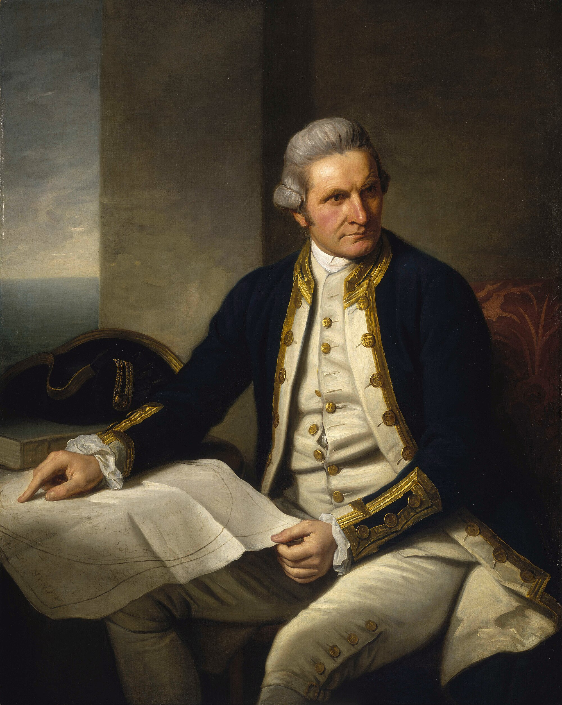

קפטן ג'יימס קוק

לחץ על התמונה להגדלה
Portrait of Captain James Cook | Source: Wikimedia Commons | License: Public Domain
ניתוח אטימולוגי של השם המלא
שם פרטי: ג'יימס (James)
השם "ג'יימס" הוא הגרסה האנגלית המודרנית לשם המקראי העברי יַעֲקֹב (Ya'akov).
מקור בלשני: השם עבר גלגולים רבים מהעברית ליוונית (*Iakobos*), ללטינית המאוחרת (*Iacomus*), לצרפתית עתיקה ולבסוף לאנגלית.
משמעות סמלית ומחקרית: הפירוש המילולי הוא "עוקב" או "מי שאוחז בעקב". עבור קוק, השם קיבל משמעות היסטורית כמעט נבואית: הוא היה האדם ש"עקב" אחרי כל פינה לא ידועה במפת העולם. הוא היה עקבי בצורה אובססיבית בחיפושו אחר האמת הגיאוגרפית, תוך שהוא "עוקב" אחרי מפות ישנות ומשוערות של קודמיו ומחליף אותן במדידות מדויקות המבוססות על מדע האסטרונומיה.
שם משפחה: קוק (Cook)
השם "קוק" הוא שם משפחה אנגלי מקצועי (Occupational name) נפוץ.
מקור בלשני: נגזר מהמילה האנגלו-סכסונית *Coc*, שמקורה בלטינית *Coquus*, שמשמעותה "טבח" או אדם המכין מזון.
אירוניה היסטורית ומדעית: למרות ששמו מרמז על עבודה במטבח, תרומתו הבריאותית הגדולה ביותר של קוק לעולם הימאות הייתה מהפכה תזונתית. קוק היה הראשון שהוכיח מדעית כי תזונה נכונה ומבוקרת – עשירה בוויטמין C (דרך שימוש בכמויות אדירות של כרוב כבוש, תמציות מאלט ופירות הדר) – מונעת לחלוטין את מחלת הצפדינה הקטלנית. במידה רבה, "הטבח" המדעי הזה הציל את חייהם של אלפי מלחים ואיפשר הפלגות רצופות של שנים, דבר שנחשב לבלתי אפשרי לפניו.
ילדות ורקע מוקדם: מהחווה ביוֹרְקְשַׁייר אל הים
ג'יימס קוק נולד בשנת 1728 בכפר מרטון שביורקשייר, אנגליה. הוא נולד למשפחה ענייה מאוד; אביו היה פועל חקלאי סקוטי קשה יום. עובדה זו הופכת את סיפורו למדהים במיוחד, שכן הוא היה מאלו הבודדים בצי המלכותי הבריטי שהצליחו להגיע לדרגות פיקוד בכירות בזכות כישרון טהור ולא בזכות ייחוס משפחתי, כסף או אצולה.
ספינות הפחם מוויטבי (Whitby)
בגיל 16 עבר קוק לעיר הנמל וויטבי והחל כמתלמד על ספינות "Colliers" – ספינות משא כבדות שהובילו פחם לאורך החופים הסלעיים והמסוכנים של אנגליה. שם הוא רכש את הניסיון המעשי הקריטי ביותר שלו: הוא למד לנווט במים רדודים, להתמודד עם גאות ושפל קיצוניים, ולפתח יכולת יוצאת דופן לקרוא ולשרטט קווי חוף מורכבים.הגיוס המפתיע לצי המלכותי
בשנת 1755, כשהוא כבר רב-חובל מנוסה בצי הסוחר שסירב לקבל פיקוד על ספינה משלו כדי להתקדם בסולם הדרגות הממוסד, החליט קוק להתגייס לצי המלכותי (Royal Navy) כמלח פשוט (Able Seaman). כישרונו בקרטוגרפיה (הכנת מפות) התגלה במהרה במהלך מלחמת שבע השנים, כאשר מיפה את נהר הסנט לורנס הבוגדני תחת אש. המפות שלו היו כה מדויקות שהן אפשרו לבריטים לנווט את ספינות המלחמה שלהם, להפתיע את הצרפתים ולכבוש את קוויבק.התגלית של 1766: הזינוק לתודעת המלך והאקדמיה
זהו הרגע המכונן שבו הפך קוק מ"נווט אמיץ ומוכשר" ל"מדען-על" בעיני הכתר הבריטי.
הרקע: המשימה בניופאונדלנד
לאחר סיום מלחמת שבע השנים (1763), בריטניה שלטה בשטחים נרחבים בצפון אמריקה. מושל ניופאונדלנד, **יו פאליסר (Hugh Palliser)**, זיהה את הצורך במיפוי קפדני. הוא בחר בקוק, שקיבל פיקוד על הספינה "גרנוויל" (Grenville). במשך חמש שנים עסק קוק במיפוי חופי קנדה הקפואים.תצפית ליקוי החמה (5 באוגוסט 1766)
בזמן ששהה באיי בורג'או (Burgeo Islands) מול ניופאונדלנד, צפה קוק ב**ליקוי חמה**. הוא הבין שתצפית מדויקת של רגע תחילת וסיום הליקוי תאפשר לחשב את קו האורך המדויק של המקום. קוק ביצע את המדידות והחישובים ושלח אותם ללונדון. הנתונים נבדקו ב"חברה המלכותית" (The Royal Society) על ידי האסטרונום ג'ון בוויס, שהדהים את חבריו כשהכריז שקצין ימי ללא השכלה אקדמית ביצע חישובים אסטרונומיים ברמה עולמית.שמו מגיע למלך ג'ורג' השלישי
הישג זה פורסם בכתב העת המדעי היוקרתי *Philosophical Transactions*. המלך ג'ורג' השלישי, שהיה חובב אסטרונומיה, התוודע ל"מלח המלומד". התצפית של 1766 שימשה למעשה כ"מבחן הקבלה" של קוק, והוכיחה למלוכה שהוא האדם היחיד שמסוגל להוביל משלחת משולבת – צבאית ומדעית – אל הלא נודע. ללא ליקוי החמה בניופאונדלנד, קוק לעולם לא היה מקבל את הפיקוד על מסעותיו הגדולים.החיבור לכתר: ה"כיסוי" המדעי והמשימה החשאית
בעקבות המוניטין שצבר ב-1766, קוק מונה למפקד ספינת ה-*Endeavour* בשנת 1768.
ההסוואה המדעית: כלפי חוץ (ומול המרגלים של צרפת וספרד), המשלחת הוצגה כיוזמה מדעית תמימה של "החברה המלכותית". מטרתה הרשמית הייתה להגיע לטהיטי כדי לצפות באירוע האסטרונומי של מעבר נוגה על פני השמש (Transit of Venus) בקיץ 1769.
המעטפה החתומה והזהות הכפולה: קוק לא נשלח רק כ"אסטרונום". הוא הועלה לדרגת לוטננט (סגן) כדי שתהיה לו סמכות צבאית מוחלטת. המלך ג'ורג' השלישי נתן לו מעטפה חתומה בסילי ובה "הוראות סודיות".
ביוני 1769, ברגע שהסתיימו התצפיות האסטרונומיות בטהיטי, תפקידו כ"מדען מטעם האקדמיה" הסתיים. קוק פתח את המעטפה ומצא פקודה צבאית-אימפריאלית ברורה: הפלג דרומה אל האזורים הלא-ממופים, חפש את היבשת הדרומית האגדית (*Terra Australis*), ואם תמצא אותה – תבע עליה בעלות בשם כתר בריטניה. המדע שימש אפוא ככיסוי למשימת התרחבות גיאופוליטית.
אידאולוגיה: רציונליזם של הנאורות
ג'יימס קוק היה התגלמות תפיסת העולם הרציונלית של ה"נאורות":
- מדע לפני דת וכיבוש: בניגוד לקונקיסטאדורים, קוק לא חיפש להמיר את דתם של הילידים בכוח החרב ולא חיפש להחריב ערים בשביל זהב. המניע העיקרי שלו היה איסוף ידע מדויק. האמין שאין מקום במפה שאסור למדוד ולתעד.
- קרטוגרפיה אובססיבית וספקנות: קוק סירב "לנחש" יבשות. הכלל שלו היה פשוט: אם לא הפלגתי שם, לא מדדתי עומק, ולא ראיתי את קו החוף בעיניי – זה לא קיים.
- הומניזם ומשמעת: הוא ראה בשמירה על חיי אנשיו חובה מוסרית ומקצועית עליונה. הוא הפעיל עונשי מלקות נגד מלחים שסירבו לאכול ירקות טריים או כרוב כבוש, ודאג לאוורור ושריפת אבק שריפה בבטן הספינה כדי למנוע מחלות.
פירוט שלושת המסעות: האמת מאחורי הגילויים
המסע הראשון (1768-1771): האמת על אוסטרליה וניו זילנד
על סיפון ה-*Endeavour*, לאחר שסיים את התצפיות בטהיטי, קוק הפליג לחפש יבשות. ניפוץ מיתוסים היסטוריים: בניגוד לאמונה הרווחת, קוק **לא** היה האירופאי הראשון שגילה את אוסטרליה או את ניו זילנד. הוא הגיע לשם יותר ממאה שנים לאחר ההולנדים.
- מי גילה? החוקר ההולנדי אבל טסמן (Abel Tasman) גילה אותה ב-1642. טסמן חשב שזהו קצה של יבשת וקרא לה Staten Landt. קרטוגרפים הולנדים שינו את השם מאוחר יותר ל-Nieuw Zeeland (על שם מחוז זילנד בהולנד).
- מה קוק עשה? קוק (ב-1769) לא גילה, אלא הקיף, הוכיח ומיפה. הוא שייט סביב ניו זילנד במשך חודשים, הוכיח סופית שמדובר בשני איים נפרדים ולא ביבשת ענקית, ושירטט מפה מדויקת להפליא שאימצה את השם ההולנדי בגרסתו האנגלית.
- מי גילה? האירופאי הראשון היה הנווט ההולנדי וילם יאנסזון (Willem Janszoon) ב-1606. ההולנדים מיפו את החוף המערבי והדרומי (שהיה צחיח ומדברי) וקראו ליבשת "הולנד החדשה" (New Holland). השם "אוסטרליה" ניתן רק בתחילת המאה ה-19 על ידי החוקר הבריטי מתיו פלינדרס.
- מה קוק עשה? קוק (ב-1770) גילה לראשונה את החוף המזרחי של היבשת. מכיוון שהחוף המזרחי היה פורה וירוק, הוא תבע אותו מיד עבור הכתר הבריטי, קרא לו "ניו סאות' ויילס" (New South Wales), ועגן במפרץ בוטאני (Botany Bay), שם הבוטנאי ג'וזף בנקס אסף אלפי צמחים. כך הפכה אוסטרליה למושבה בריטית במקום הולנדית.
המסע השני (1772-1775): אנטארקטיקה והטעות לגבי טסמניה
במסע זה, על סיפון ה-*Resolution*, קוק הפליג רחוק יותר דרומה מכל אדם אחר לפניו, וחצה את החוג האנטארקטי. אף שלא ראה את היבשת עצמה (בשל הקרח העצום), הוא הוכיח שאין "יבשת דרומית פורייה", וחיסל את המיתוס הגיאוגרפי. אולם, מסע זה זכור גם בגלל טעות גיאוגרפית בולטת של קוק.
- מי גילה את השם המקורי? אבל טסמן ההולנדי גילה את האי ב-1642 וקרא לו "ארץ ואן דימן" (על שם פטרונו). השם שונה ל"טסמניה" רק ב-1856 כדי לנקות את תדמית המקום כמושבת עונשין פלילית אכזרית.
- הטעות של קוק: קוק (וקצינו פורנו) חקרו את האזור במסע השני, אך קוק, שבדרך כלל סירב לנחש, הניח בטעות ש"ארץ ואן דימן" מחוברת לאוסטרליה ושהיא רק חצי אי. הוא שרטט זאת כך במפותיו. רק ב-1798 הוכיחו החוקרים באס ופלינדרס (Bass & Flinders) שזהו אי נפרד כשעברו במצר המפריד (מצר באס).
המסע השלישי (1776-1779): הוואי והמוות הטראגי
קוק יצא לחפש את המעבר הצפון-מערבי (בין מזרח למערב קנדה) דרך מצר ברינג בצד הפסיפי. בדרכו, הוא גילה את איי הוואי, שלהם קרא "איי הסנדוויץ'". לאחר שנכשל במעבר מצר ברינג בשל חומות קרח, חזר להוואי כדי להעביר את החורף.
הביקור השני בהוואי הסתיים באסון. מלחים מקומיים גנבו סירת הצלה מספינתו. קוק, שסבל מהתקפי זעם בעקבות עייפות מצטברת (ואולי מחלה), החליט לרדת לחוף עם נחתים חמושים ולנסות לחטוף את המלך המקומי (Kalaniʻōpuʻu) כדי לשמש כבן ערובה עד להחזרת הסירה. המקומיים התקוממו, התפתחה תגרה על החוף במפרץ קילאקקואה (Kealakekua Bay), וב-14 בפברואר 1779 נדקר קוק בגבו ומת במים הרדודים.
נתונים הידרולוגיים והמהפכה המדעית
הידרולוגיה: מפרץ בוטאני (Botany Bay)
כאשר קוק עגן במפרץ בוטאני ב-1770 (אוסטרליה), הוא ביצע מדידות עומק קפדניות. הוא מצא שהעומק הממוצע של המפרץ נע בין 5 ל-10 מטרים. למרות שהמפרץ נראה מבטיח, הנתונים ההידרוגרפיים שתיעד – במיוחד העובדה שהכניסה למפרץ רדודה ומסוכנת עקב שרטונות חול – הם שגרמו לבריטים, 18 שנים מאוחר יותר (ב-1788), להחליט להזיז את ההתיישבות הראשונה צפונה יותר ל"פורט ג'קסון" (סידני), שהיה עמוק ובטוח יותר לעגינה ארוכת טווח.
דיוק קווי האורך (הכרונומטר הימי K1)
ההישג הטכנולוגי הגדול ביותר של קוק התרחש במסעו השני, כאשר לקח עמו את הכרונומטר הימי K1 (העתק של שעון ג'ון הריסון). עד אז, ניווט התבסס על ניחוש חלקי של קו האורך. קוק הצליח למדוד את מיקומו בסטייה של קילומטרים בודדים, מה שאיפשר לו למקם איים קטנים באוקיינוס השקט שחוקרים קודמים גילו אך "איבדו" את מיקומם (שכן רשמו את קו האורך בסטייה של מאות קילומטרים).
מקורות וביבליוגרפיה (אימות מחקר אקדמי)
- "The Journals of Captain James Cook" (בעריכת J.C. Beaglehole): המקור הראשוני הכולל את נתוני העומק, האסטרונומיה וההוראות הסודיות. מהיומנים עולה בבירור שקוק הכיר את תגליותיו של אבל טסמן.
- "Abel Tasman: In Search of the Great South Land" (Gordon McLauchlan): מאמת את גילוי ניו זילנד ו"ארץ ואן דימן" (טסמניה) בשנת 1642.
- "The Life of Matthew Flinders" (Miriam Estensen): מאמת כיצד מתיו פלינדרס היה הראשון שהקיף את אוסטרליה, הוכיח שטסמניה היא אי (יחד עם באס ב-1798), והציע את השם "אוסטרליה".
- "Captain Cook: Obsession and Betrayal" (John Gascoigne, 2007): ניתוח הקשר לחברה המלכותית, תצפית הליקוי בניופאונדלנד (1766), ולמלך ג'ורג' השלישי.